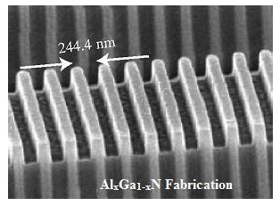
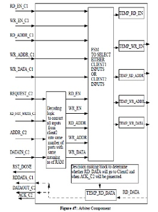
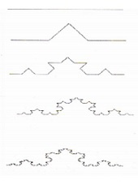
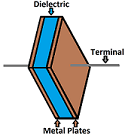
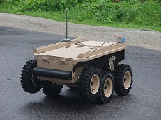

Study of Electronic & Electromagnetic Properties of One-Dimensional Photonic Crystal
Synopis:
The aim here was to study and understand the underlying physics governing the electronic and the electromagnetic properties like the density of states (DOS) which characterized the mode density of the fluctuating vacuum fields enabling us to engineer various quantum-mechanical processes which depended on it, band structure and the characteristics of wave propagation in the light of reflectivity and transmission characteristics of one-dimensional photonic crystal to determine how light will propagate through the crystal structure. Use of AlGaN/GaN material composition in all of the research work was due to the combined advantages of enhanced band offset, lattice mismatch induced piezoelectric effect.Its development suggested the possibility of increased miniaturization and efficiency of computing components and other technologies.
Institute:
RCC-Institute of Information Technology, Kolkata, India
Advisor:
`
Dr. Arpan Deyasi
Duration:
Jun.' 2013 - May' 2014
Download:
Architectural Design of a RAM Arbiter
Synopsis:
Standard memory modules to store (and access) data are designed for use with a single system accessing it. More complicated memory modules would  be accessed through a memory controller, which are also designed for one system.For multiple systems to access a single memory module there must be some facilitation that allows them to access the memory without overriding or corrupting the access from the others. This was done with the use of a memory arbiter, which controls the flow of traffic into the memory controller. The Address Clash Problem was nicely tackled and solved. The design was verified in simulation and validated on a Xilinx ML605 evaluation board with a Virtex-6 FPGA.
Institute:
RCC-Institute of Information Technology, Kolkata, India
Advisor:
Dr. Abhishek Basu
Duration:
Jan.' 2014 - May' 2014
Download:
Application of Fractals in Digital Images
Synopsis:
In this project we aimed to model one of the important characteristics associated with fractal  geometry i.e. fractal dimension. Since it is widely known that the primary cause of error in any image processing task is the resolution, an analysis of the effect of resolution on fractal dimension was carried out. For varying levels of brightness and contrast, the fractal dimension was also evaluated. Finally, the variation of the fractal dimension on modified images such as high and low grey valued images, edge detected images and filtered images was studied and satisfactory results were obtained.
Institute:
Indian Statistical Institute, Kolkata, India
Advisor:
Dr. Pabitra Pal Choudhury
Duration:
Mar.' 2013 - Aug.' 2014
Download:
Theoretical Study of Current Flow through Real Dielectric Material
Synopsis:
Mathematical analysis was carried out to calculate the current flow in a real dielectric material.A range of dielectric materials were taken up as a part of this study. Moreover, a comparative analysis was also done with the current flowing through an ideal dielectric. The dissipated energy was also calculated for both the cases (i.e. in the absence as well as the presence of a dielectric) after obtaining current density. The existence of displacement current was established in the case of real dielectric, which was seen to be absent for the ideal one. The results were quite in agreement with the findings in the existing literature.
Institute:
RCC-Institute of Information Technology, Kolkata, India
Advisor:
Dr. Himadri Mullick
Duration:
Jun.' 2013 - Aug.' 2014
Download:
Design and Implementation of an Unmanned Ground Vehicle
Synopsis:
In this project we focused at designing and developing an unmanned surface vehicle. But the major disadvantage of these unmanned robots is that they typically make use of RF circuits for maneuver and control. Essentially RF circuits suffer from a lot of drawbacks such as limited frequency range i.e. working range, and limited control. A wireless system for maneuvering the vehicle without the use of the conventional RF circuits was also implemented.
Institute:
RCC-Institute of Information Technology, Kolkata, India
Advisor:
Asst. Prof. Saraswati Saha
Duration:
Jun.' 2012 - Jul.' 2012
Download:
Selected Publications
Book Chapters
Arpan Deyasi, Sourangsu Banerji, Sayan Bose and Abhishek Halder
Analytical Computation of Band Structure of 1D Photonic Crystal under Normal Incidence of Electromagnetic Wave
Lecture Notes in Electrical Engineering: Computational Advancement in Communication Circuits and Systems, part 6: Advances in Devices and Circuit, vol. 335, Chapter 36, p. 331-338, 2014 [Springer, DOI 10.1007/978-81-322-2274-3 36]
PDF Link
Monograph
Arpan Deyasi, Sourangsu Banerji
Study of Electronic Properties of 1D Photonic Crystal
Lap-Lambert Academic Publishing, Germany, 2014 [ISBN: 978-3-659-61682-2]
Journal
Sourangsu Banerji, Arpan Deyasi
Simulating Reflectivity Property for Propagating Wave inside One-Dimensional Photonic Crystal with Different Material Systems
Journal of Electron Devices, Volume-21, pp. 1823-1829, March 2015. [ISSN: 1682-3427]
Download PDF
Sourangsu Banerji, Abhishek Halder, Arpan Deyasi, Sayan Bose, Subhasis Mandal
Analytical Computation of Density of States of One-Dimensional Photonic Crystal under Polarized Incident Wave for Different Materials
Journal of Electron Devices, Volume-19, pp. 1654-1662, April 2014. [ISSN: 1862-3427]
Download PDF
Conference
Arpan Deyasi, Sourangsu Banerji
On the Comparative Analysis of the Band Structure of One-Dimensional Photonic Crystal with Different Material Composition under Oblique Wave Incidence
National Level Conference on Frontline Research in Computer, Communication and Device, pp.: 155-166, December 2015. [ISBN: 978-93-8592-600-6]
Download PDF
Sourangsu Banerji, Arpan Deyasi
Application of Group Theory in Transfer Matrix Technique for Band Structure Calculation in 1D Photonic Crystal
International Conference on Computer, Communication and Control, pp. 1-5, September 2015 [IEEE Xplore, Print ISBN:978-1-4799-8163-2, DOI-10.1109/IC4.2015.7375647]
PDF Link
Sourangsu Banerji, Arpan Deyasi
Computing Photonic Eigen-Modes and Bandwidth for 1D Photonic Crystal with Different Material Compositions
2nd National Conference on Emerging Trends in Engineering & Sciences, pp. 239-244, July 2015 [ISBN: 978-93-84869-63-2]
Download PDF
Sourangsu Banerji, Arpan Deyasi, Abhishek Halder, Sayan Bose
Analysis of Reflectivity for Propagating Wave inside 1D Photonic Crystal with Different Material Systems
International Conference on Computing, Communication & Manufacturing, pp. 162-166, December 2014 [ISBN: 978-0-9940194-0-0, ACEEE-CPS]
Download PDF
Arpan Deyasi, Sourangsu Banerji, Abhishek Halder, Sayan Bose
Theoretical Investigation on Photonic Bandgap Tailoring in One-Dimensional Photonic Crystal using Different Numerical Methods
International Conference on Devices, Circuits and Communications, pp. 1-6, September 2014 [IEEE Xplore, Print ISBN: 978-1-4799-6052-3 DOI: 10.1109/ICDCCom.2014.70247461]
PDF Link
Sayan Bose, Abhishek Halder, Sourangsu Banerji, Arpan Deyasi
First-order Calculation of Band Structure of One-Dimensional Photonic Crystal
National Conference on Materials, Devices and Circuits in Communication Technology, pp.: 20-23, February 2014. [ISBN: 978-93-80663-20-3]
Download PDF
Sourangsu Banerji, Arpan Deyasi, Abhishek Halder, Sayan Bose
Comparative Study of Density of States of 1D Photonic Crystal for Different Polarization Conditions of Incident Wave
International Conference on Electronics, Communication and Instrumentation, January 2014. [IEEE Xplore, Print ISBN: 978-1-4799-3982-4, DOI: 10.1109/ICECI.2014.6767359]
PDF Link